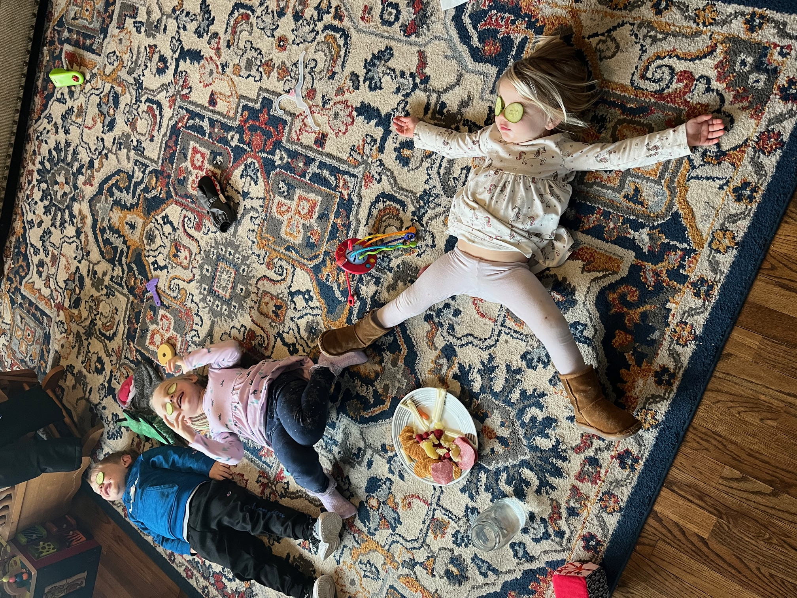

My journey with coding has been both trying and satisfying during this first season of getting knee deep in code.
I have had the opportunity to join the program LaunchCode which has helped me in more ways than I thought possible.
On my own I was only able to pull together a handful of projects, all while pulling my hair out. Now I have the chance to
learn under skilled instructors, to colaborate with other students, and to put my skills to the test in a controlled environment.
The Big Why

When starting a new chapter like this, I try to ask 'The Big Why'. This gives me the direction I need to check myself before I
potentially make a wrong move. 'The Big Why' for this season is to pursue a carrer in web development in order to provide for
my family and to allow me to continue my work as a minister of Jesus Christ.
This simple statement gives me the reason to keep on coding late at night, to wake up early to do my reading for class, and to push
my code time after time to make sure I'm on track with my assignments.
Carrer Goals
To find a position that is both rewarding and challenging
To be able to provide for my family including my wife and four children
To be able to find a work/life balance
"He who laughs at himself never runs out of things to laugh at." -Epictetus